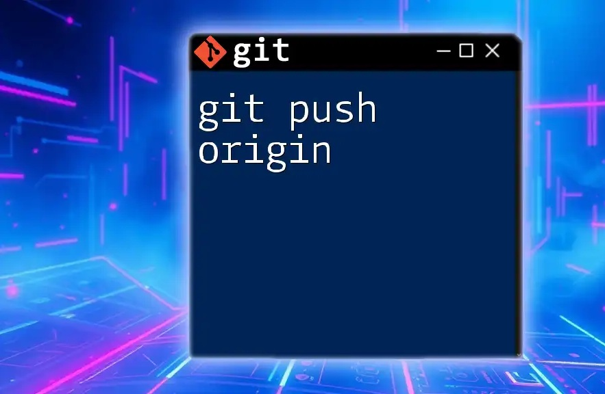

Ciclo de Vida del Desarrollo de Software (SDLC)
¿Qué significa SDLC? El SDLC (Software Development Life Cycle) es una metodología estructurada e iterativa utilizada por los equipos de desarrollo para crear, implementar y mantener sistemas de software de alta calidad de manera eficiente y rentable.
Esta metodología divide el desarrollo de software en fases diferenciadas, repetibles e interdependientes. Cada fase tiene objetivos y resultados específicos que sirven como base para la siguiente etapa. En conjunto, estas fases forman una hoja de ruta que ayuda a los equipos de desarrollo a crear software que satisfaga las necesidades de las partes interesadas (stakeholders), cumpla con los requisitos del proyecto y responda a las expectativas de los clientes.
1. Planificación
En esta fase se definen los objetivos, el alcance y las metas del proyecto. Los stakeholders colaboran para elaborar un plan general que contempla factores como el presupuesto, el cronograma, los recursos disponibles y los posibles riesgos.
Objetivo:
Determinar qué se va a desarrollar y cómo se llevará a cabo.
2. Análisis de requisitos
Durante esta etapa, el equipo recopila y documenta los requisitos funcionales y no funcionales del software.
Este proceso incluye:
- Comprender las necesidades de los usuarios.
- Identificar restricciones del sistema.
- Definir características y funcionalidades esperadas.
- Establecer criterios de claridad y rendimiento.
Objetivo:
Definir claramente qué debe hacer el sistema.
3. Diseño
En la fase de diseño, los requisitos se transforman en una especificación técnica detallada.
Las actividades más comunes incluyen:
- Creación de wireframes.
- Elaboración de maquetas o prototipos.
- Diseño de bases de datos.
- Elaboración de diagramas arquitectónicos.
- Definición de la estructura y composición del sistema.
Objetivo:
Establecer cómo será construido el software.
4. Desarrollo
En esta etapa se realiza la programación del sistema.
Los desarrolladores utilizan las especificaciones de diseño para:
- Escribir el código fuente.
- Construir módulos y funcionalidades.
- Integrar componentes del sistema.
- Implementar bibliotecas y herramientas necesarias.
Objetivo:
Convertir el diseño en un producto funcional.
5. Pruebas
Durante la fase de pruebas, el software se evalúa para detectar errores y verificar que cumpla con los requisitos establecidos.
Entre las pruebas más comunes se encuentran:
- Pruebas unitarias.
- Pruebas de integración.
- Pruebas de sistema.
- Pruebas de aceptación del usuario.
Objetivo:
Garantizar la calidad y el correcto funcionamiento del software.

6. Despliegue
El despliegue es la fase en la que se implementa el software en el entorno de producción. Una vez que el software ha superado las pruebas, se procede a su implementación y puesta en funcionamiento.
El despliegue suele realizarse mediante:
- Lanzamiento completo del sistema.
- Actualizaciones graduales o incrementales.
- Implementaciones por fases.
Objetivo:
Entregar el software a los usuarios finales.
7. Mantenimiento
El mantenimiento es la fase final del SDLC y continúa durante toda la vida útil del software.
Las actividades principales incluyen:
- Corrección de errores.
- Actualización del sistema.
- Optimización del rendimiento.
- Implementación de nuevas funcionalidades.
- Corrección de vulnerabilidades de seguridad.
Objetivo:
Garantizar que el software siga siendo útil, seguro y eficiente a lo largo del tiempo.
Conclusión
El SDLC proporciona un marco estructurado para el desarrollo de software, asegurando que cada fase se complete de manera eficiente y efectiva. Al seguir este ciclo, los equipos de desarrollo pueden crear software de alta calidad que cumpla con las expectativas de los usuarios y se mantenga relevante a lo largo del tiempo.